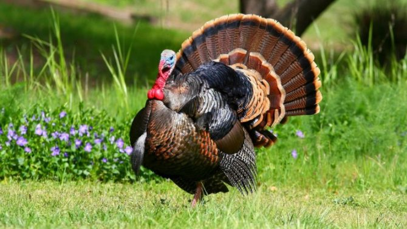
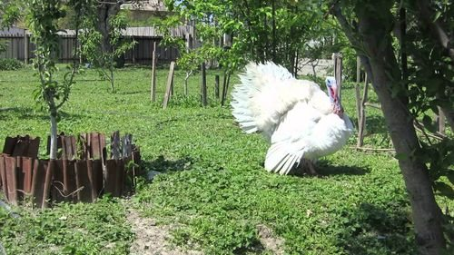
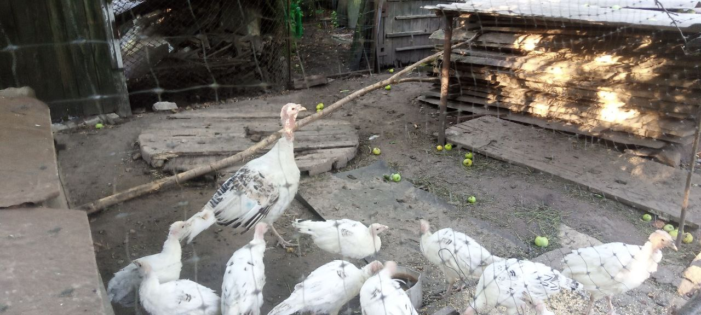
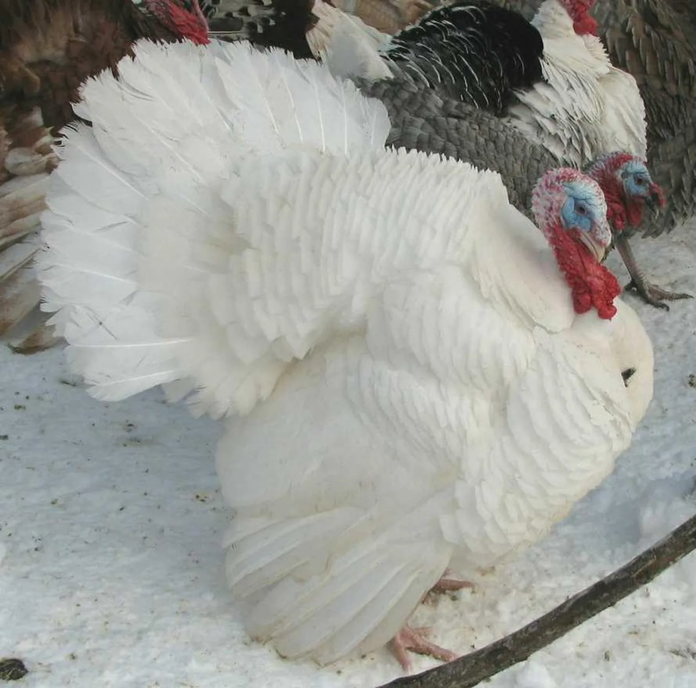

Бронзові київські (1200грн - 1 шт.)
Індики бронзової київської породи не обділені увагою, а навіть навпаки. Самці мають яскравим багаторівневим оперенням, яке переливається безліччю відтінками. Особи мають велику масу і великі розміри. Відчувши небезпеку, вони виробляють гучні звуки.

Білі широкогруді (
Назва порід індиків частіше відбувається від рідних місць або зовнішніх ознак птиці. Так і в
цьому випадку, маючи білосніжним оперенням і сильно видатної вперед грудьми, різновид
заслужено прозвали білими широкогрудих індиками.
Білі широкогруді (1500грн 1400грн - 1шт.)
Назва порід індиків частіше відбувається від рідних місць або зовнішніх ознак птиці. Так і в
цьому випадку, маючи білосніжним оперенням і сильно видатної вперед грудьми, різновид
заслужено прозвали білими широкогрудих індиками.

Королівська пальма (Безкоштовно (Прим: Ця порода декоративна. Та входить до червоноі книги. Птахи цього виду агресивні))
Королівські палички Індики - це порода Туреччини, найвідоміша як іконописна птиця з унікальним виглядом, в основному біла з смужками металічного чорного кольору.
